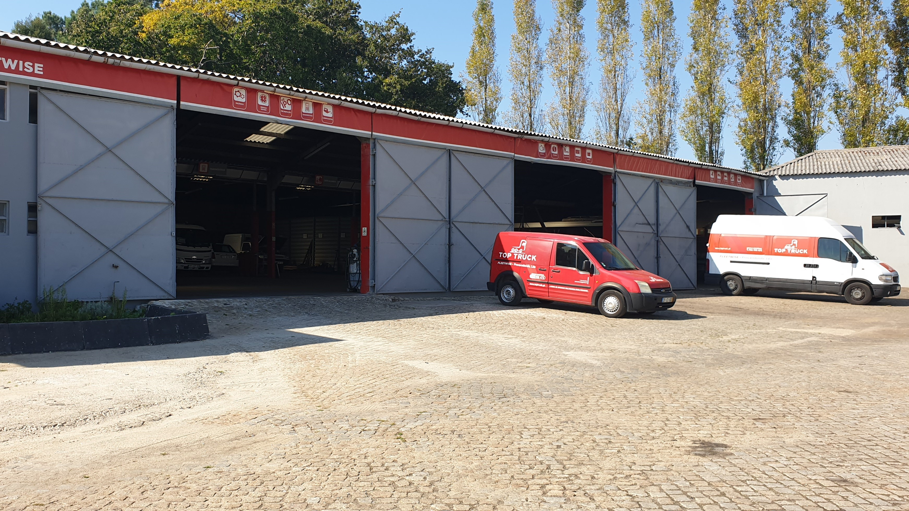

Começar pelo que o cliente tem em mãos
Organizei a entrada por tipo de veículo ou equipamento. A pessoa pode identificar o seu contexto antes de percorrer a lista de serviços.
Prova Truck / Frotas profissionais
Manutenção e reparação multimarca. De comerciais ligeiros a pesados, máquinas e equipamentos.
Encontrar uma área
01 / Serviços para frotas
Uma forma de orientar o pedido, sem substituir o diagnóstico da equipa.
Manutenção e reparação de veículos pesados. No pedido, indique o veículo e o que pretende verificar ou reparar.
02 / O trabalho da oficina
O site apresenta manutenção, reparação e assistência para diferentes veículos e equipamentos. A descrição da situação é o ponto de partida para conversar com a equipa.
Uma futura filmagem poderia acompanhar uma operação autorizada e explicar o que está a ser verificado, junto da página do serviço.
Consultar a Prova Truck no site oficialPreparar a primeira conversa
Indique a categoria e a necessidade que pretende explicar. A equipa teria de confirmar a intervenção adequada.
Demonstração local: nada é enviado ou guardado. Não indique dados pessoais. O âmbito, a disponibilidade e as condições teriam de ser confirmados com a empresa.
Resumo local · nada foi enviado
A seleção não é uma recomendação técnica nem um orçamento.Uma proposta de Ricardo Almeida
O site já apresenta os segmentos e os serviços da Prova Truck. Preparei um percurso que começa pelo veículo e liga essa escolha ao pedido.
Organizei a entrada por tipo de veículo ou equipamento. A pessoa pode identificar o seu contexto antes de percorrer a lista de serviços.
Proponho filmar uma intervenção autorizada na oficina e explicar uma etapa do diagnóstico ou da reparação. O filme ficaria junto do serviço, para dar contexto ao trabalho que é descrito.
O resumo reúne veículo, necessidade e observações. Nesta demonstração não envia nada; mostra como essa informação poderia acompanhar um pedido real.
Um exemplo do meu trabalho
Na Canvas Custom Furniture, filmei e editei a produção e integrei o filme no website. Este projeto mostra como junto imagens do trabalho real à apresentação da empresa.
Ver o projeto CanvasRicardo Almeida · Vídeo e websites